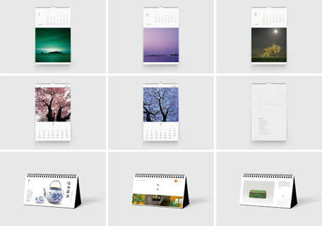
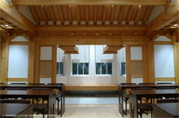

본문 컨텐츠 영역
전통문화콘텐츠 개발 및 컨설팅
아름지기는 우리 전통문화의 좋은 콘텐츠를 문화적 자산으로 생각하고 현대인의 삶 곳곳에 스며들게 하는 작업을 수행합니다.
- 달력 디자인 컨설팅
- 문화상품 개발 및 판매
- 피츠버그대학교 한국실 건립 디자인 코디네이션
-
달력 디자인 컨설팅
(재)아름지기는 2003년부터 기업 달력 컨설팅 사업을 통해 우리의 문화예술의 아름다움과 우수성을 전하고 있습니다. 달력과 다이어리는 디지털 콘텐츠가 쏟아지는 현재에도 꾸준히 사용되고 있는 대표적인 아날로그 아이템입니다. 아름지기는 이와 같은 일상품을 통해 우리 문화예술을 소개하여 보는 즐거움을 전달하고자 합니다.
-
- [삼성문화재단]
- 2005년<우리의 제철 음식>
- 2006년<한국의 맛, 김치>
- 2007년<고운 우리 그릇, 사발과 대접>
- 2008년<정원 속의 세상, 화훼초충도>
- 2009년<생활 속의 아름다움, 소반>
- 2010년<쓰개의 아름다움을 찾아서>
- 2011년<기록문화의 꽃, 조선시대 행사도>
- 2012년<서여기인, 글씨는 곧 사람입니다>
-
- [효성그룹]
- 2004년 <강운구 - 한국의 야생화>
- 2005년 <최진연 - 그리운 풍경, 한국의 옛 다리>
- 2006년 <배병우 - 창덕궁>
- 2007년 <조성연 - 꽃, 정물>
- 2008년 <김병훈 - 아름드리 나무 아래서>
- 2009년 <이원철 - 별빛과 풍경>
- 2011년 <한성필 - in Between Layers>
- 2012년 <이민호 - Portable Landscape>
-
-
문화상품 개발 및 판매
아름지기는 조상의 심미안과 지혜가 깃든 다양한 전통 공예품을 모티프로 한 문화상품을 개발하고 판매합니다. 전통 장인과 현대 예술가들이 빚어낸 문화상품들은 생활 속에서 우리 전통문화의 아름다움을 누릴 수 있게 합니다.
문화상품 보러가기 -
피츠버그대학교 한국실 건립 디자인 코디네이션
우리 문화의 아름다움을 세계에 알리는 아름지기의 첫 번째 해외 프로젝트, 피츠버그대학교 한국실 건립사업이 1년여의 논의를 거쳐 2009년 봄부터 본격적으로 시작되었습니다. 장소는 피츠버그대학 내에 위치한 Cathedral of Leaning 304호실. 약 20평의 작은 강의실이 오는 2011년에는 Korea Heritage Room이라는 이름으로 새롭게 꾸며져 학기중에는 강의장소로, 방학동안에는 피츠버그 시민들은 물론 관광객에게는 한국의 아름다움을 널리 알리는 장소로 사용될 예정입니다. 아름지기는 이 사업에 디자인 코디네이터로 참여하여 건축가 선정, 디자인 조율, 콘텐츠 자문 등을 담당합니다.
1930년대부터 시작된 피츠버그대학의 국가실 프로젝트는 피츠버그대학 뿐만 아니라 시민 모두가 애정과 자부심을 갖고 있는 도시의 상징적인 프로젝트다. 피츠버그 대학의 제 10대 총장, John F. Bowman은 도시의 랜드마크가 될 수 있는 초고층의 대학건물을 만들었다. Nationality Room은, 각 이민사회의 전통적인 디자인을 모티브로 꾸며져 다민족사회인 미국을 상징하는 교육과 교류의 공간으로 사용되고 있다.
